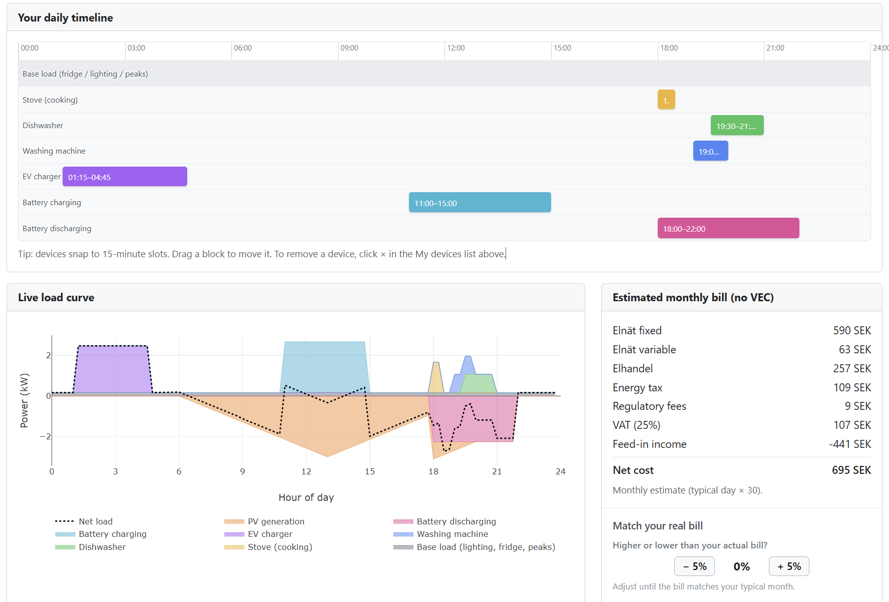
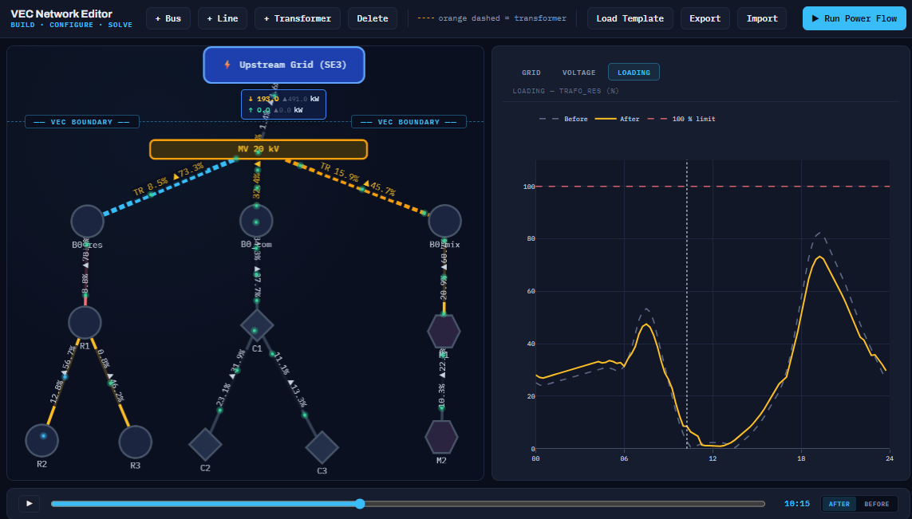

A KTH × E.ON research collaboration, backed by the Swedish Energy Agency, building the business models, behavioral evidence, and digital tools that will make virtual energy sharing work in Sweden's distribution grids.
The EU has opened the door to virtual energy sharing through RED II and the Internal Electricity Market Directive — yet Sweden still has no concrete operational framework to put it into practice. This project closes that gap.
We develop a forward-looking business-model framework built for Swedish regulation, grid constraints, and customer rights — spanning regulatory mapping, stated-preference behavioral analysis, data-driven flexibility modeling, and grid-impact simulation on real low-voltage feeders. Every layer is validated in a live pilot within E.ON's distribution network in southern Sweden.
Six work packages organized around design, behavior, simulation, assessment, validation, and dissemination.
International practice review; analysis of Swedish regulations and grid codes including settlement, taxation, GDPR, and switching rights; actor and role mapping; business model co-design with E.ON; definition of at least four representative scenarios.
A stated-preference survey assesses willingness to participate under varying political, economic, societal, technical, and environmental conditions. Data-driven models estimate Behind-the-Meter and Front-of-the-Meter flexibility from smart meter and DER metadata.
A digital model of selected LV distribution grids in E.ON's network combines topology, asset metadata, and smart meter data. Unbalanced load flow, hosting capacity estimation, voltage tracking, and loss calculation reveal where energy sharing delivers the highest grid value.
Multi-layer evaluation across grid performance, actor-level economics, regulatory feasibility, and socio-economic benefits — sustainability, resilience, fairness — synthesized into a multi-KPI matrix and visualized through DSO and customer interfaces.
Validation in a representative pilot site within E.ON's distribution network in southern Sweden. Mixed residential and commercial/industrial customers coordinate solar PV, batteries, EVs, heat pumps, and district heating connectivity.
KTH coordinates with the Swedish Energy Agency, E.ON Energy Networks, and pilot participants. Findings inform reports and guidelines delivered to key stakeholders.
A stated-preference instrument supporting WP2.
The platform implements a stated-preference survey for assessing customer willingness to participate in virtual energy sharing initiatives. Participants respond under hypothetical scenarios spanning political, economic, societal, technical, and environmental factors.
Results inform the behavioral analysis in WP2 and the socio-economic benefit assessment in WP4, complementing data-driven flexibility models built from smart meter and DER metadata.


A distribution-network simulator supporting WP3.
A distribution-network simulator aimed at DSOs and system planners, for analysing how virtual energy community sharing affects the low-voltage grid. It builds a feeder topology, configures load groups and behind-the-meter assets, and runs a real power flow to reveal how community sharing reshapes transformer loading, voltages, losses, and grid exchange across a 24-hour cycle — comparing the network with and without VEC.
This supports the grid-impact analysis in WP3, complementing the customer-side behavioral study.
Real-world validation in southern Sweden.
Southern Sweden faces some of the country's most acute grid-capacity and generation challenges — and E.ON operates much of the network there. A representative site within this network will host the project's real-world validation.
The pilot features mixed residential and commercial/industrial customers with complementary energy profiles, coordinating solar PV, batteries, EVs, heat pumps, and district heating connectivity based on smart meter data and DER operation logs. All data handling follows GDPR and unbundling rules.
Researchers from KTH and partners at E.ON Energy Networks.